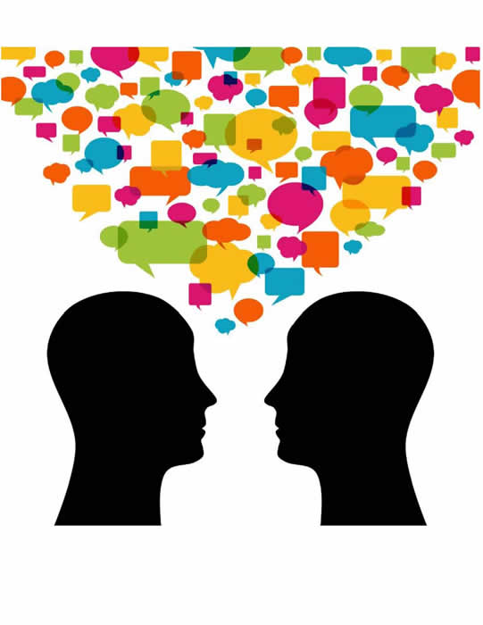

Teaching Point:
Today we will see how we can use Buttons and Broadcast to turn the page.
Character Conversations
Today we are going to learn about a new block called Broadcast. Broadcast is a very special block in scratch - it is a block that let's one Sprite tell other sprites what to do. Today we are going to use it to get our characters talking to each other to start the joke.
We can use Broadcast to have the characters talk to each other. When one character is talking to another character two things should happen - they should SAY what they are saying, and they should BROADCAST it. When the other character gets that broadcast, they know it is there turn to talk.
Today's Assignment
Have your 2nd sprite respond to the beginning of the joke with a Who, What, Where, When, or Why question - For example: if the first Sprite says "Why did the chicken cross the road?" The second Sprite says "I don't know. Why?" or if the first Sprite says "What does a cow eat for breakfast?" The second spirte should say "I don't know. What?"
Back to School Portal